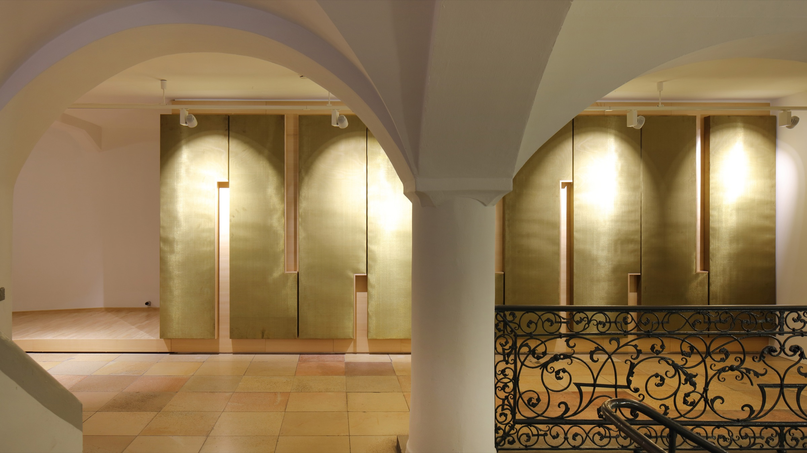
FLZ im „Neuen Bau“ Ulm
Führungs- und Lagezentrum, Umbau während des laufenden Betriebs, Ulm
Eine Zentrale, die nie schläft, in einem Haus mit Denkmalstatus
Der Renaissancepalast „Neuer Bau“ stammt aus dem 16. Jahrhundert und war ursprünglich als Lagerhaus und Herberge gedacht. Heute — nach einem Großbrand 1924 und erneuten Beschädigungen durch den Zweiten Weltkrieg — beherbergt er die Polizeidirektion Ulm.
Im Zuge der Polizeistrukturreform galt es, das Führungs- und Lagezentrum der Polizeidirektion in den historischen Bau zu integrieren. Die neue Nutzung bedingt die denkmalgerechte Integration von höchsten Sicherheitsanforderungen, redundanter Haustechnik und Komfort für den 24-Stunden-Dauerbetrieb. Es entsteht der zentrale Ort für die sogenannte Lagebearbeitung.
- Kategorie
- Arbeiten · Erhalten · Umnutzen
- Standort
- Ulm
- Bauherr
- Vermögen und Bau Baden-Württemberg, Amt Ulm
- Fertigstellung
- 2020
- Auszeichnungen
- Beispielhaftes Bauen Ulm und Alb-Donau-Kreis 2013–2019
Galerie
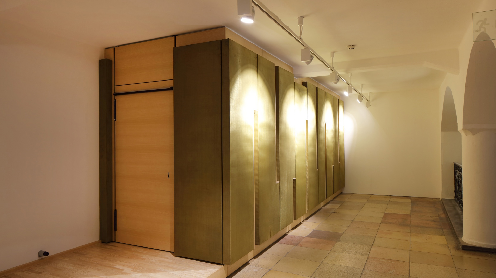
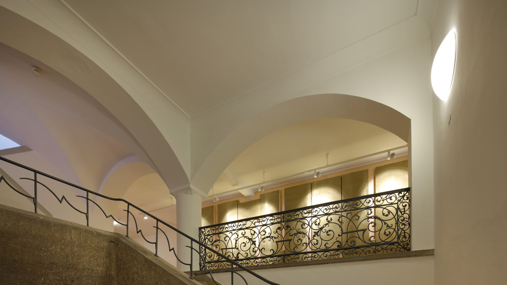
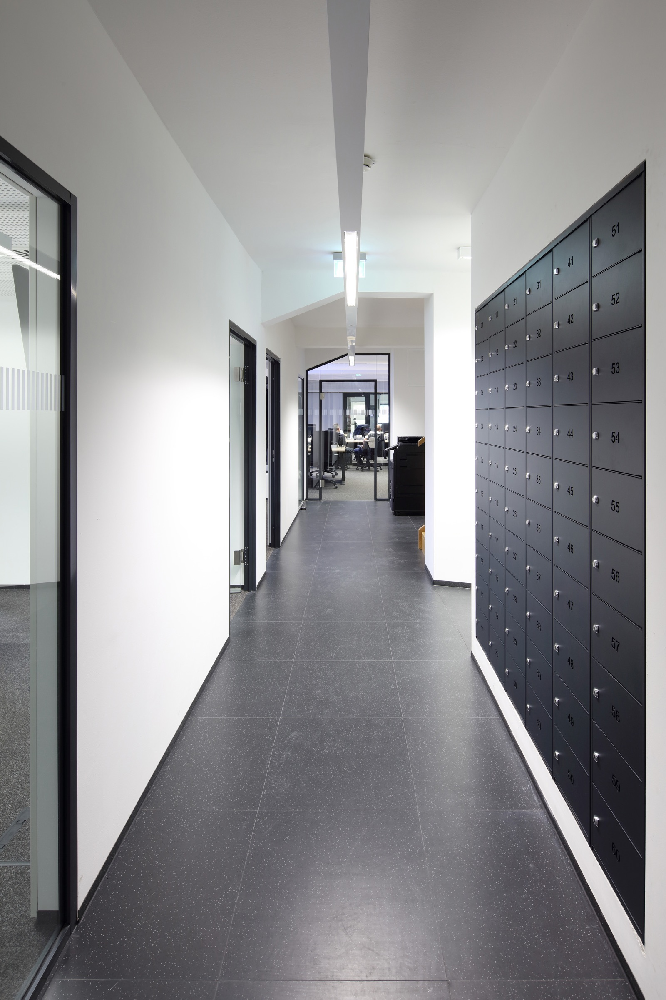
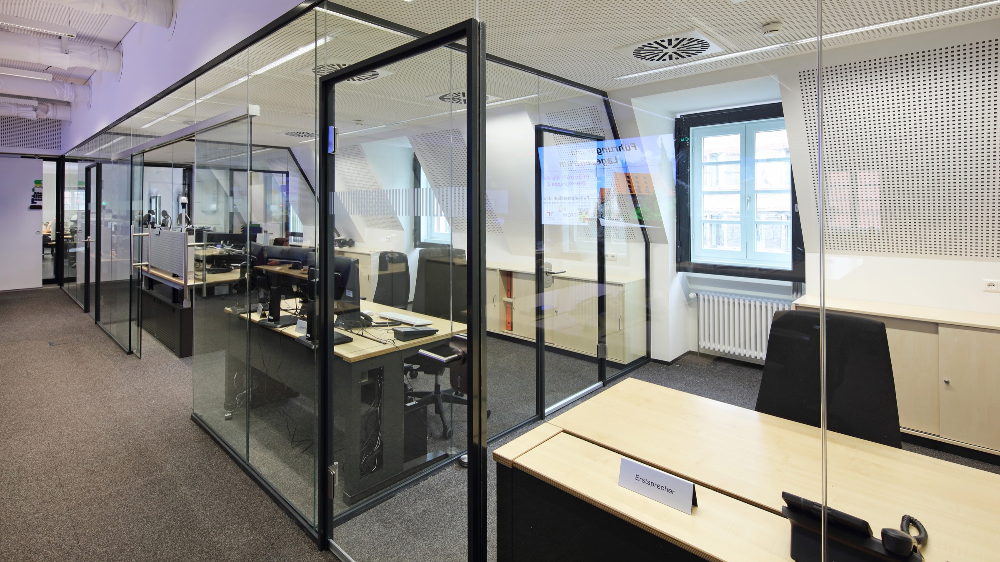
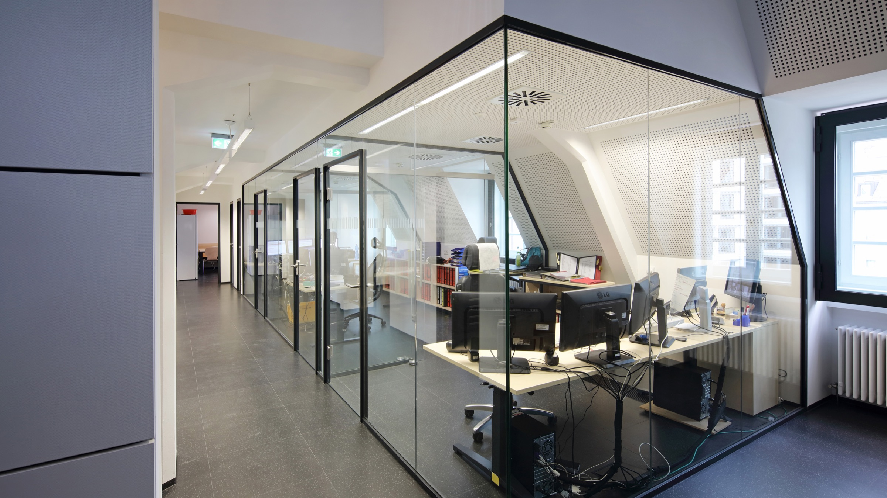
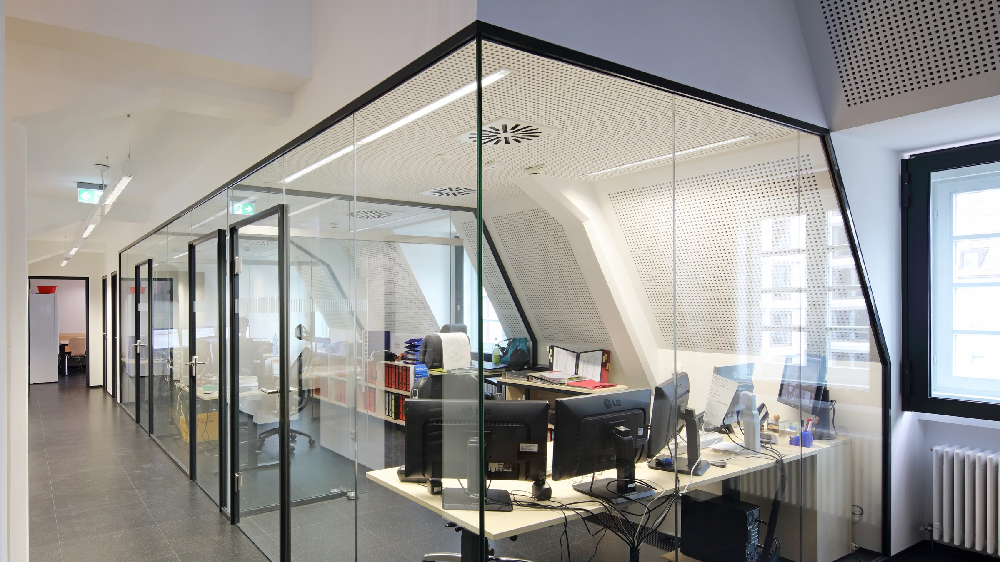
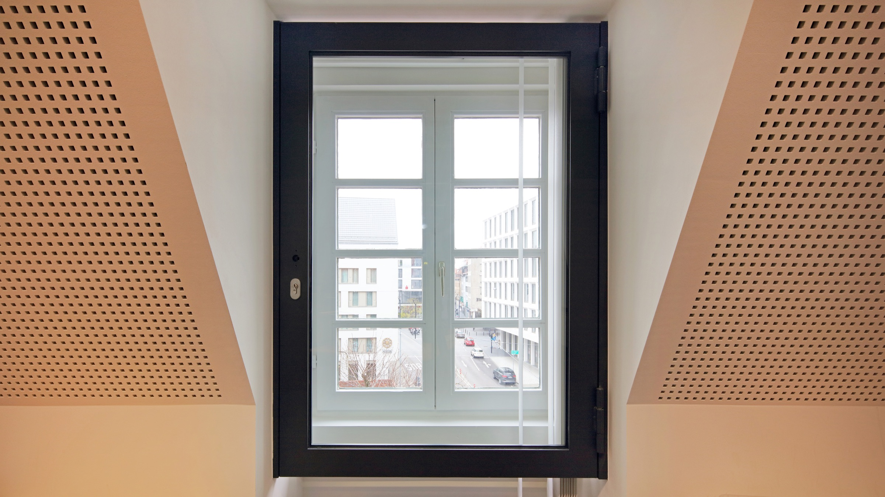
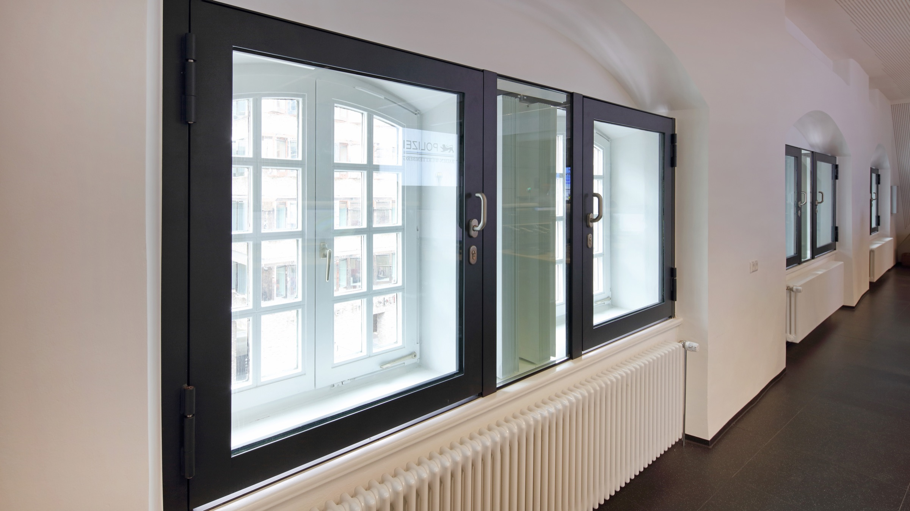
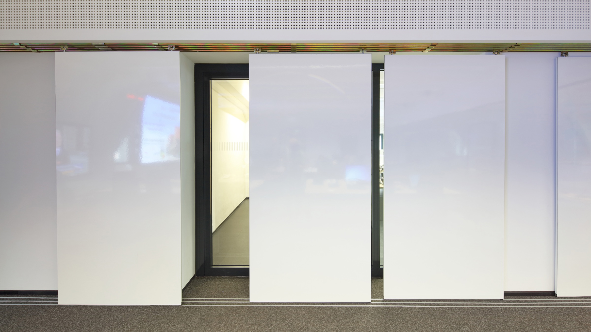
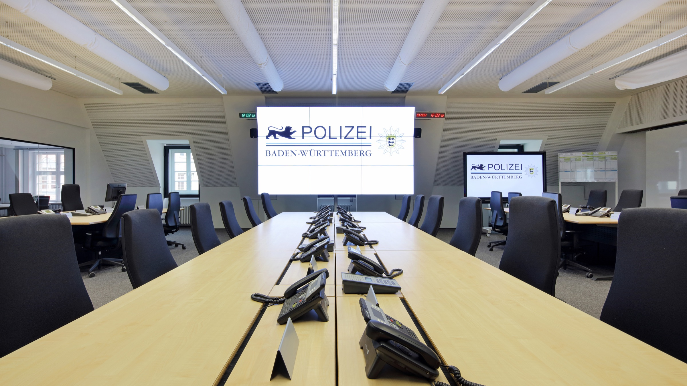
Das Raster von 1927 trägt die Nutzung von heute
Beim Wiederaufbau wurde 1927 der größte Teil des Gebäudes in traditioneller Holzbauweise wiederhergestellt. Das erste Dachgeschoss entstand in einer für die damaligen Verhältnisse neuartigen Betonkonstruktion.
Durch die klare und stabile Grundstruktur des Gebäudes und das regelmäßige Stützenraster werden bis heute flexible Nutzungen ermöglicht. Genau diese Eigenschaft macht den Bau für eine Nutzung tauglich, die es zum Zeitpunkt seiner Errichtung nicht gab. Die Unterbringung des FLZ erfolgte in den Dachgeschossen.
Binderachsen tauschen, während nebenan der Notruf läuft
Bedingt durch die Altbau- und Denkmalsituation, die zentrale innerstädtische Lage, die hochkomplexen baulichen Gegebenheiten sowie die entwurflichen Anforderungen waren komplexe, sicherheitsrelevante und denkmalgerechte Detaillösungen gefordert.
Um die notwendigen Deckenhöhen herzustellen, wurden komplette Binderachsen ausgetauscht — ein Eingriff in das tragende Gerüst des Hauses. Der gesamte Umbau erfolgte während des laufenden Betriebs.
Pläne
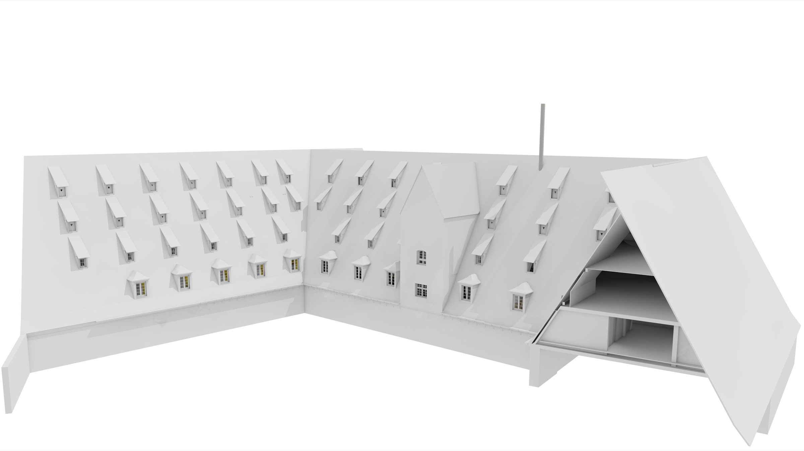
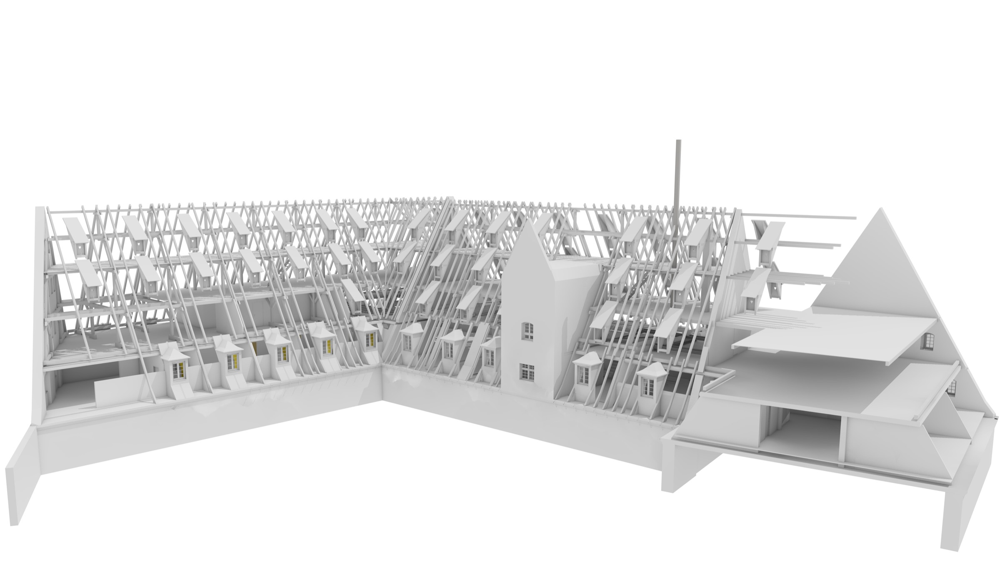
Projektdaten
- Nutzung
- Sonderbau, Sicherheit und Verwaltung
- Erbrachte Leistungen
- Objektplanung, Integralplanung — ergänzen
- Zertifikate
- Zertifizierung ergänzen
- Fotografie
- Fotograf:in ergänzen
- Veröffentlichungen
- Publikation, Medium, Jahr — ergänzenPublikation, Medium, Jahr — ergänzen
- Team
- Name ergänzenName ergänzenName ergänzen